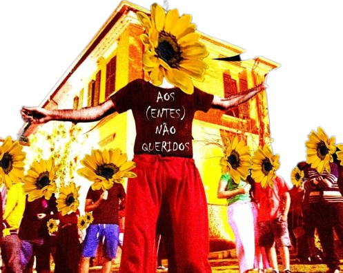
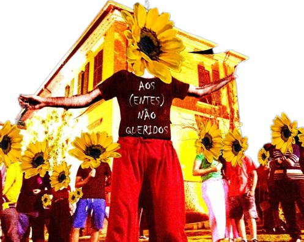

Projetos
O Coletivo Narciso nasceu em maio de 2010 a partir do projeto “Teatro na Escola” no município de São Roque – SP dentro da Escola Municipal de Ensino Fundamental (EMEF) São João Novo Ciclo II. Inicialmente, com caráter estudantil, o grupo apresentou 12 espetáculos nos seus 05 primeiros anos em escolas públicas e dentro de todas as edições do Festival de Teatro Estudantil Vasco Barioni na cidade de São Roque, vencendo a fase municipal do Mapa Cultural do estado de São Paulo com o espetáculo “Nada Mais”. O grupo, desde 2010, participa de todas as edições do Festival de Teatro Estudantil Vasco Barioni, além de apresentações locais no município e região.